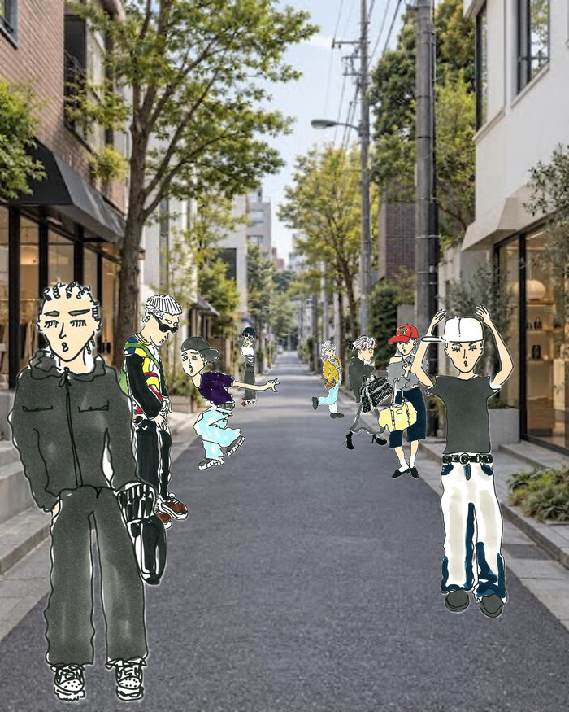

<!doctype html>
<html lang="ja">
<meta charset="utf-8">
<meta name="viewport" content="width=device-width, initial-scale=1">
<title>画像表示例</title>
<style>
  body { margin: 0; }
  .street-visual { display: block; width: 100%; max-width: 1400px; height: auto; margin-inline: auto; }
</style>
<!-- 先頭のメイン画像を想定。ページ下部に置く場合はfetchpriorityを外し、loading="lazy"を追加してください。 -->
<picture>
  <source media="(min-width: 768px)" type="image/webp" srcset="street-pc-1400.webp">
  <source media="(min-width: 768px)" type="image/jpeg" srcset="street-pc-1400.jpg">
  <source type="image/webp" srcset="street-sp-700.webp">
  
</picture>
</html>
